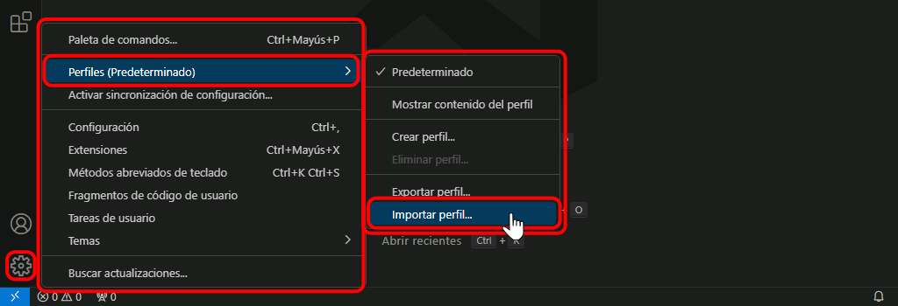
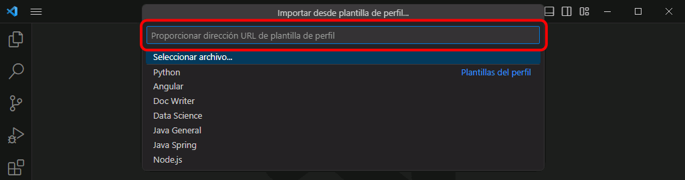
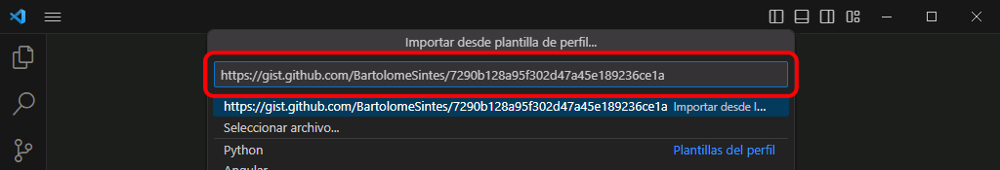
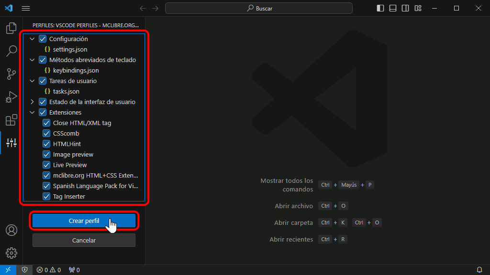
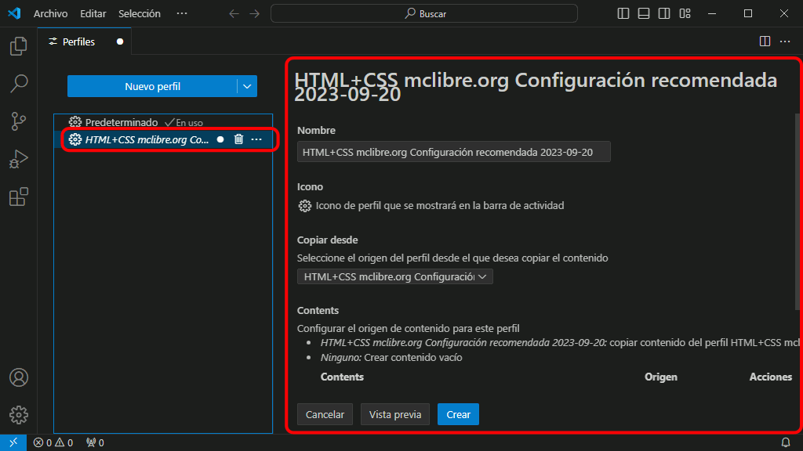
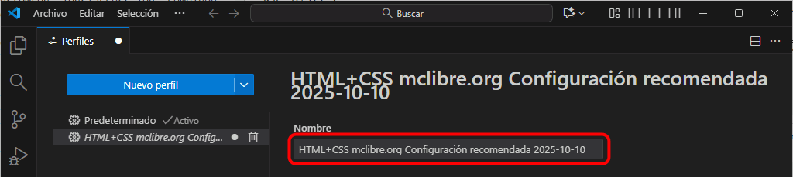
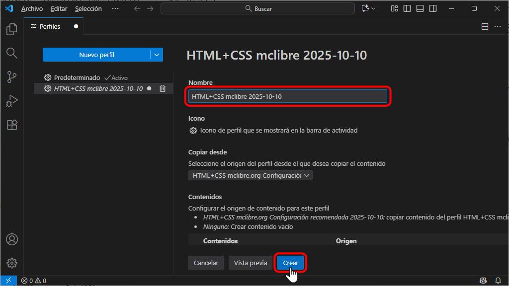

Importar el perfil recomendado
La URL del perfil recomendado para seguir estos apuntes en Windows es: https://gist.github.com/BartolomeSintes/7290b128a95f302d47a45e189236ce1a
Una vez creado y seleccionado el perfil en Visual Studio Code, no se requieren ajustes adicionales.
Para importar el perfil de Visual Studio Code recomendado para este curso ...
- Haga clic en la rueda dentada y elija la opción :

- Se abrirá una caja de texto para escribir la URL del perfil compartido:

- La URL del perfil recomendado para seguir estos apuntes en Windows es: https://gist.github.com/BartolomeSintes/7290b128a95f302d47a45e189236ce1a
- Copie y pegue el enlace en la caja de texto y pulse Intro:

- Se mostrará la lista de elementos incluidos en el perfil (que se pueden seleccionar de forma individual). Para importar los elementos sleeccionados, haga clic en el botón "Crear perfil":

- Se mostrará una caja de texto con el nombre del perfil:

- Se recomienda cambiar ese nombre por un nombre más corto y que empiece de forma distinta al resto de perfiles. En este caso, el nombre podría comenzar por "HTML+CSS", por ejemplo. para terminar, haga clic en el botón "Crear".

- Una vez creado el perfil, Visual Studio se reiniciará cargando el perfil. El nombre del perfil activo se muestra en la parte superior de la ventana. El icono de la rueda dentada muestra también un par de caracteres que correponden al principio del nombre del perfil.

- El perfil importado se mostrará en el menu de la rueda dentada.

Una vez creado y seleccionado el perfil en Visual Studio Code, no se requieren ajustes adicionales.